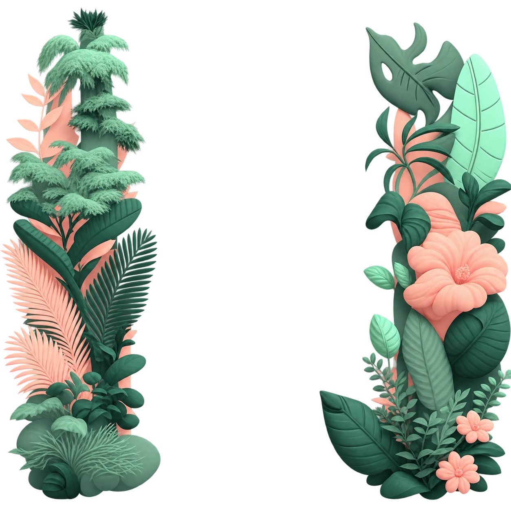

FRESHLY MADE, EVERY DAY
ชงสดใหม่ ทุกแก้ว
กาแฟ · มัทฉะ · ผลไม้สดปั่น
อาหารอิ่มอร่อย และขนมจานโปรด
01 / 07
เอสเพรสโซ
อร่อย คุณภาพดี ในราคาที่เข้าถึงง่าย
ผลไม้สด · มัทฉะแท้จากญี่ปุ่น · ซอสขนมปังโฮมเมด
เจอกันที่ร้านนะดูแผนที่ใน Google Maps ↗

กาแฟ · มัทฉะ · ผลไม้สดปั่น
อาหารอิ่มอร่อย และขนมจานโปรด
เอสเพรสโซ
ผลไม้สด · มัทฉะแท้จากญี่ปุ่น · ซอสขนมปังโฮมเมด